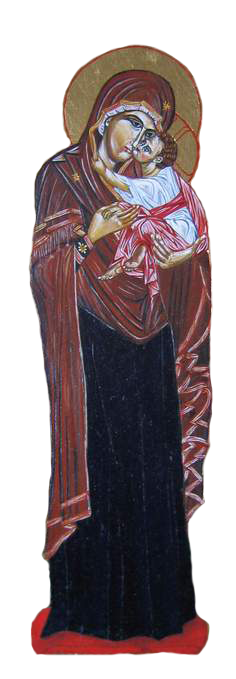

Куда блудите, мисли моје, и кога тражите? Саберите се у срце као на домаће огњиште; тамо ћете се састати с Најжељенијим и Најмилијим. Расуле сте живот мој по свему свету и учиниле сте га плитком баром, која се суши и оставља блато. И орао лети у даљину и у висину, али се враћа у пећину своју на легалиште своје, у топло гнездо своје. И мрав мили по прашини и гмиже уз дрвеће, али пре захода сунца хита мравињаку своме, дому своме. Куда ви блудите и дању и ноћу, мисли моје, и зашто се никада не враћате гнезду своме и дому своме? Највећи Гост посећује срце моје; куца на врата, али нема ко да му отвори. Све су мисли моје расуте по имању Његовом, по тварима Његовим, по оборима Његовим и по стоци Његовој. Шта је важније видети у једној великој царевини него цара, и кога жели путник да види пре него цара? И с ким је беседа слађа него с царем? Куда блудите, мисли моје, и кога тражите? Онај кога ви тражите, чека вас дома. Оставите Његове њиве и поља; окрените лице своје од Његових оброка и скотова, па пожурите к Њему на виђење и разговор. О свеци Божији, великаши Цара небеснога, узнесите молитве ваше пред престо Царев, да се спасем од расејаности мисли. А ти, Ангеле Божији, првосвештениче молитве, стави много тамјана у златну кадилницу твоју, и окади молитве свих светих за мене. Слава и хвала Ономе Kоји седи на вечном престолу славе, слава Mу на век. Амин.